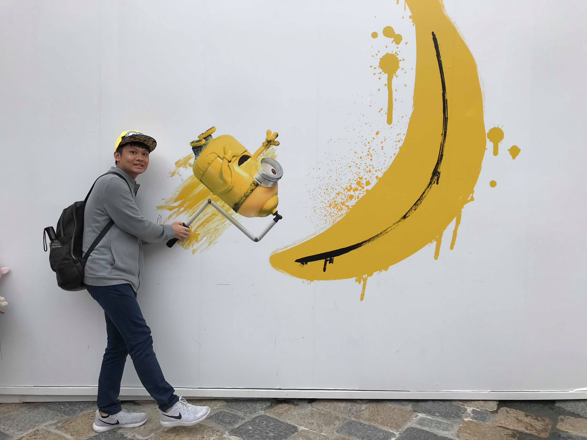

Bio.
Currently I'm a Research Assistant at both the Institute of Information Science, Acadamia Sinica under the supervision of Dr. Hsin-Ming Wang and Communications, Signal and Information Processing (CSIP) Lab, National Taiwan University (NTU) under the supervision of Prof.Hsuan-Jung Su. My research interest lies in the areas of Signal Processing, Speech Processing and Machine Learning, especially the intersection between them.
Previously I received my Bachelor's degree from National Chiao Tung University in June 2018, majoring in Electrical and Computer Engineering (ECE).
Here is my CV.
News:- Mitigating Multipath Effect for DSSS Positioning – Using Deep Learning Techniques (pdf slides) (on going work)
- Voice Conversion using Locally Linear Embedding with pre-softmaxed Phonetic Posteriorgram (demo page)
- Participated in the 2nd Voice Conversion Challenge (VCC2018) , both HUB and SPOKE task. (demo page)
> To eliminate the vocoder effects, which is one of the main causes of quality degradation, we proposed a vocoder-free Voice Conversion system with a combination of the previous exemplar-based Voice Conversion system and the Differential framework, which utilizes spectral difference to synthesize waveform, to construct Voice conversion.
> Proposed a vocoder-based Voice Conversion method for non-parallel corpora.
- Alleviating Discontinuity Effects on Direct Waveform Modification for Voice Conversion Synthesis (demo page) (Ongoing work)
- Image Deblurring Using Perceptual Generative Adversarial Network
- Developed the efficient millimeter wave beams power allocation, and users grouping system.
- Reaches 300% higher datarate per user compared to undirectional traditional beamforming methods.
- Intelligent Mobility Aids for elderly
Overall GPA: 3.98 / 4.3 (3.86 / 4.0)
Major GPA : 4.06 / 4.3 (3.94 / 4.0)
Last 60 GPA: 4.18 / 4.3 (3.95 / 4.0)
Last Year GPA : 4.3 / 4.3 (4.0 / 4.0)